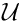
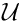
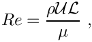
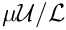
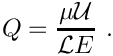
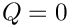
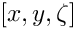
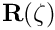
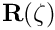

This tutorial demonstrates the use of unstructured meshes in 2D fluid-structure interaction problems. We combine two single-physics problems, namely
- Large deformations of an elastic 2D solid, loaded by surface tractions and a gravitational body force
- Flow through a 2D channel that is partly obstructed by a rigid 2D solid body
for which we have already created unstructured 2D meshes, using the combination of xfig, oomph-lib's conversion code fig2poly, and the unstructured mesh generator Triangle.
The problem
The figure below shows a sketch of the problem. A 2D channel is partly obstructed by an odd-shaped elastic obstacle that deforms in response to gravity and to the traction that the fluid exerts onto it. The coupled problem is a straightforward combination of the two single-physics problems shown at the top of the sketch: The flow through a channel with a rigid obstacle (shown on the top left), and the deformation of the elastic obstacle in response to a prescribed surface traction (shown on the top right). When the two constituent single-physics problems interact, the fluid provides the traction onto the solid while the change in the solid's shape affects the fluid domain.
As usual, we solve the problem in non-dimensional form. For this purpose we non-dimensionalise all lengths on some reference length  and use the average inflow velocity, , to non-dimensionalise the velocities in the Navier-Stokes equations. As discussed in the single-physics fluids tutorial, the Reynolds number of the flow is then given by
and use the average inflow velocity, , to non-dimensionalise the velocities in the Navier-Stokes equations. As discussed in the single-physics fluids tutorial, the Reynolds number of the flow is then given by

where  and
and  are the fluid density and viscosity, respectively.
are the fluid density and viscosity, respectively. oomph-lib's Navier Stokes elements non-dimensionalise the fluid stresses, and in particular the pressure, on the viscous scale, .
We assume that the solid's constitutive equation is given by oomph-lib's generalised Hookean constitutive law and non-dimensionalise the solid-mechanics stresses and tractions with Young's modulus  .
.
The FSI interaction parameter  which represents the ratio of the (viscous) fluid stress scale to the reference stress used to non-dimensionalise the solid stresses is therefore given by
which represents the ratio of the (viscous) fluid stress scale to the reference stress used to non-dimensionalise the solid stresses is therefore given by

Results
The animation below shows a number of steady flow fields (streamlines and pressure contours) and deformations, obtained in a parameter study in which we first compute the solution of the coupled problem at zero Reynolds number and for a vanishing FSI interaction parameter, . For these parameter values, the structure is loaded only by gravity and does not feel the presence of the fluid, whereas the fluid flow is affected by the changes to the fluid domain when the obstacle deforms (first frame). Next, we increase the Reynolds number to  and re-compute the solution (second frame), before increasing in small increments (subsequent frames). The increase in may be interpreted as a reduction in the obstacle's stiffness and the animation shows clearly how this increases its flow-induced deformation.
and re-compute the solution (second frame), before increasing in small increments (subsequent frames). The increase in may be interpreted as a reduction in the obstacle's stiffness and the animation shows clearly how this increases its flow-induced deformation.

Overview of the implementation
The use of unstructured meshes means that the design of an algebraic node update strategy for the deforming fluid mesh, as described for fluid-structure interaction with structured meshes, is (almost) impossible and would, in any case, defeat the point of using automatic mesh generation tools. A slightly less efficient, but easily and generally applicable strategy is to update the nodal positions within the fluid mesh by treating the fluid domain as a pseudo-elastic solid. Apart from this change in the node-update strategy, the majority of the steps described below are the same as for fluid-structure-interaction problems on structured meshes.
One important prerequisite for the use of the FSI helper functions in oomph-lib's FSI_functions namespace is that each boundary at the FSI interface between the fluid and solid meshes must be parametrised by boundary coordinates. Moreover, the boundary-coordinate representations in the fluid and solid meshes must be consistent. Once the appropriate boundaries have been identified, oomph-lib's unstructured meshes allow the automatic (and consistent) generation of these boundary coordinates; see How the boundary coordinates are generated. Unfortunately, different third-party mesh generators use different strategies to label mesh boundaries and a certain amount of "manual labour" tends be required to identify boundaries after the mesh has been imported into oomph-lib.
Since the driver code, discussed in detail below, is somewhat lengthy (partly because of the large number of self-tests and diagnostics included), we provide a brief overview of the main steps required to solve this problem:
- Use the combination of xfig,
oomph-lib'sconversion codefig2poly, and the unstructured mesh generatorTriangleto generate the solid mesh, as already discussed in another tutorial.
- Use the same procedure to generate the fluid mesh, as discussed in the single-physics fluids tutorial. Make sure that the fluid mesh is derived from the
SolidMeshbase class to allow the use of pseudo-elasticity to update the nodal positions in response to the deformation of the domain boundary.
- Ensure that boundary coordinates are set up (consistently) on the FSI interface between the two meshes. For meshes derived from
oomph-lib'sTriangleMeshclass, this may be done by calling the functionTriangleMesh::setup_boundary_coordinates().
- Attach
FSISolidTractionElementsto the faces of the "bulk" solid elements that are exposed to the fluid flow. These elements will apply the fluid traction to the solid.
- Combine the
FSISolidTractionElementsinto a compoundGeomObjectthat provides a continuous representation of the solid's FSI boundary, required by theImposeDisplacementByLagrangeMultiplierElementsdescribed below.
- Attach
ImposeDisplacementByLagrangeMultiplierElementsto the faces of the "bulk" fluid elements that are adjacent to the solid. These elements will employ Lagrange multipliers to deform the pseudo-solid fluid mesh so that its shape remains consistent with the solid's FSI boundary (as described by the compoundGeomObjectcreated in the previous step).
- Determine the "bulk" fluid elements that are adjacent to the integration points of the
FSISolidTractionElements, using the functionFSI_functions::setup_fluid_load_info_for_solid_elements(...).
In our experience, the most error-prone part of this procedure is the identification of the mesh boundaries in the xfig-based, unstructured meshes. It is very easy to exclude a node at the end of the FSI boundary in the fluid mesh, say, while "remembering" it in the solid mesh. If this happens, the automatic matching of the unstructured fluid and solid meshes will not work (see How the boundary coordinates are generated for details). For this reason, the driver code presented below generates a lot of output that can be used to identify and fix such problems. See also the section What can go wrong? at the end of this tutorial.
Problem Parameters
As usual we define the various problem parameters in a global namespace. We define the Reynolds number,  , and the FSI interaction parameter .
, and the FSI interaction parameter .
We define the gravitational body force that acts (only!) on the solid
(see Gravity only affects the solid – really? to find out why this is odd...)
and provide a pointer to the constitutive equation for the solid. For simplicity, this constitutive equation will also be used for the (pseudo-)solid elements that determine the deformation of the fluid mesh. In general, the constitutive law used to control the deformation of the fluid mesh need not have any physical basis, it is more important that the elements do not become too deformed during the mesh motion.
Finally, we provide a helper function that will be used to establish whether a node is located on the FSI boundary when the mesh is in its undeformed configuration. This function uses a simple "brute force" approach. It is required because currently our xfig-based mesh generation procedures do not allow us to associate fractional parts of a polygonal domain boundary as belonging to different mesh boundaries. Hence, such boundaries have to be identified a posteriori in the driver code. Although similar in form, equivalent helper functions must be (re-)written for different domain geometries.
Creating the meshes
The solid mesh
Following the procedure discussed in the corresponding single-physics solid mechanics problem we create the mesh for the elastic obstacle using multiple inheritance from oomph-lib's TriangleMesh and the SolidMesh base class.
As before, we set the Lagrangian coordinates to the current nodal positions to make the initial configuration stress-free. Initially all boundary nodes are located on the same boundary, corresponding to the single xfig polyline that defines the surface of the elastic obstacle. In the current problem we have to identify two additional boundaries: The "bottom boundary" (boundary 1) where the positions of the solid nodes will be pinned; and the nodes that are located on the FSI boundary (boundary 2).
Finally, we identify the elements that are located next to the newly created domain boundaries and create boundary coordinates along boundaries 1 and 2.
The fluid mesh
The creation of the fluid mesh follows the same process but uses the mesh created for the
single-physics fluids problem. The use of multiple inheritance from the TriangleMesh and SolidMesh base classes will allow us to employ pseudo-solid node-update techniques to update the position of the fluid nodes in response to changes in the domain boundary.
The fluid problem requires the identification of three additional boundaries: The inflow boundary (boundary 1), the outflow boundary (boundary 2) and the FSI boundary (boundary 3).
We create boundary coordinates along the three newly-created mesh boundaries and document the process for the FSI boundary (boundary 3). See What can go wrong? for a more detailed discussion of the output created here.
The driver code
We specify an output directory and instantiate the constitutive equation for the solid mechanics computations, specifying the Poisson ratio. (Recall that the omission of Young's modulus in the constructor of the constitutive equation implies that all stresses and tractions are non-dimensionalised on .)
We create the Problem object and output the domain boundaries and the initial guess for the solution.
Finally, we perform a two-stage parameter study. We start by solving the problem at zero Reynolds number with the FSI parameter set to zero.
Next we re-solve the problem at finite Reynolds number, before slowly increasing the strength of the fluid-structure interaction.
The Problem class
The Problem class has the usual members, with access functions to the fluid and solid meshes, and a post-processing routine.
The class provides two private helper functions: one to create the FaceElements that apply the fluid traction to the solid and one to create the FaceElements that use Lagrange multipliers to deform the fluid mesh according to the motion of the solid boundary.
Another private helper function is provided to document the boundary parametrisation of the solid's FSI interface:
The private member data includes pointers to the various meshes and a GeomObject representation of the FSI boundary.
The Problem constructor
We start by building the fluid mesh, using the files created by Triangle ; see the discussion in the corresponding single-physics fluids problem.
Next, we apply the boundary conditions for the fluid and the pseudo-solid equations. We pin the pseudo-solid nodes along all domain boundaries, apart from the FSI boundary (boundary 3), apply a no-slip condition for the fluid velocity along the solid channel walls (boundary 0) and the FSI boundary (boundary 3); pin the velocity at the inflow (boundary 1, where we will impose a Poiseuille flow profile); and impose parallel outflow at the downstream end (boundary 2). As mentioned before, the manual identification of mesh boundaries in unstructured meshes that are generated by third-party mesh generators is a relatively error-prone process. Therefore we document the boundary conditions for the pseudo-solid to allow an external sanity check.
We complete the build of the elements by specifying the Reynolds number and the constitutive equation used in the pseudo-solid mesh deformation.
Finally, we impose a Poiseuille profile at the inflow boundary (boundary 1) and assign the equation numbers.
Next, we create the solid mesh, using the files created by Triangle ; see the discussion in the corresponding single-physics solids problem.
We complete the build of the solid elements by passing the pointer to the constitutive equation and the function pointer to the gravitational body force.
We suppress the displacements of the nodes on boundary 1.
Next, we create the FaceElements that apply the fluid traction to the solid
and the FaceElements that use Lagrange multipliers to deform the fluid mesh to keep it aligned with the FSI boundary.
We combine the various sub-meshes into a global mesh.
Finally, we set up the fluid-structure interaction by determining which "bulk" fluid elements are located next to the FSI traction elements that apply the fluid load to the solid. We document the boundary coordinate along the FSI interface by opening the Multi_domain_functions::Doc_boundary_coordinate_file stream before calling FSI_functions::setup_fluid_load_info_for_solid_elements(...) If this stream is open, the setup routine writes the Eulerian coordinates of the points on the FSI interface and their intrinsic surface coordinate  to the specified file.
We use the private helper function doc_solid_boundary_coordinates() to create the same output from the "solid side" of the FSI interface. This is useful for debugging purposes because it allows us to check whether the fluid and solid meshes employ a matching parametrisation of the FSI interface; see What can go wrong? for more details.
All that's left to do is to set up the equation numbering scheme and the problem is ready to be solved.
Creating the FSI traction elements
The creation of the FSI traction elements adjacent to the solid boundary 2 follows the usual procedure. We loop over the relevant 2D "bulk" solid elements and attach the FSISolidTractionElements to the appropriate faces.
Next we add the newly-created FaceElement to the mesh of traction elements, specify which boundary of the bulk mesh it is attached to, and pass the FSI interaction parameter to the element.
Creating the Lagrange multiplier elements
The creation of the FaceElements that use Lagrange multipliers to impose the boundary displacement of the pseudo-solid fluid mesh is again fairly straightforward (the use of Lagrange multipliers for the imposition of boundary displacements is explained in another tutorial). We start by combining the FSISolidTractionElements attached to the solid's FSI boundary to form a compound GeomObject. This GeomObject provides a continuous representation of the FSI boundary (as determined by the deformation of the solid) and is parametrised by the boundary coordinate assigned earlier. This continuous representation will define the desired position of the boundary as enforced by the Lagrange multiplier elements.
Now we attach ImposeDisplacementByLagrangeMultiplierElements to the appropriate faces of the "bulk" fluid elements that are adjacent to the FSI interface (boundary 3 in the fluid mesh).
Next we pass a pointer to the compound GeomObject that defines the desired shape of the FSI interface and specify which boundary in the "bulk" fluid mesh the element is attached to.
Finally, we apply boundary conditions for the Lagrange multipliers: we pin the Lagrange multipliers for nodes that are located on boundary 0 where the nodal displacements are pinned. (Recall that the Lagrange multipliers are additional degrees of freedom added to the "bulk" degrees of freedom originally created by the "bulk" element.)
Post-processing
The post-processing routine simply executes the output functions for the fluid and solid meshes and writes the results into separate files.
Sanity check: Documenting the solid boundary coordinates
The function doc_solid_boundary_conditions() documents the parametrisation of the solid's FSI boundary in the file solid_boundary_test.dat. The file contains the solid's counterpart of the data that we created for the fluid side of the FSI interface when setting up the fluid-structure interaction with FSI_functions::setup_fluid_load_info_for_solid_elements(...). The two parametrisations should be consistent; see What can go wrong? for more details.
The function also writes the file fsi_geom_object.dat, which may be used to check the integrity of the compound GeomObject
that represents the FSI interface of the solid: As  sweeps along the range used to parametrise the boundary, the position vector , returned by
sweeps along the range used to parametrise the boundary, the position vector , returned by GeomObject::position(...) should follow the FSI interface.
The implementation of the function is reasonably straightforward so we omit its listing here, see the source code for details.
Comments and Exercises
How the boundary coordinates are generated
The use of pseudo-elasticity for the node update in the fluid mesh makes the solution of FSI problems extremely straightforward. They key ingredient that allows the "automatic" coupling between the unstructured fluid and solid meshes
is the (consistent!) generation of the boundary coordinate along the FSI interface. The function TriangleMesh::setup_boundary_coordinates(...) achieves this automatically and exploits the facts that
- Meshes generated by
Triangleare bounded by polygonal line segments. - Vertices in the polygonal domain boundary coincide with vertex nodes of the triangular finite elements.
The assignment of the boundary coordinate along mesh boundary b is performed as follows:
- Attach
FaceElementsto the relevant faces of the "bulk" elements that are adjacent to mesh boundaryb. - Establish the connectivity of the
FaceElementsusing the fact that they share commonNodesand sort the elements into "connectivity" order around the boundary. - Locate the "lowest left" boundary node on the boundary and set its boundary coordinate to zero.
- Step through the
FaceElements(and their nodes) in order (taking into account that someFaceElementsmay be reversed relative to each other) and use the distance between adjacent nodes as the increment in the boundary coordinate. - Delete the
FaceElements.
This procedure generates a consistent boundary parametrisation, irrespective of how many fluid and solid elements meet at the shared FSI boundary. This is because the nodes along all FaceElements are located along the same straight line segments. The method would not work if the boundary was curvilinear!
The method also fails, if the "lower left" boundary nodes identified in the two meshes are not located at the same position. This tends to happen if boundary nodes are assigned inconsistently, e.g. because the final node on the FSI interface was identified as being located on the appropriate mesh boundary in the fluid mesh but not in the solid mesh. In that case the boundary coordinates of the two meshes are offset relatively to each other by an amount equal to the distance between the respective "lower left" nodes.
Here is a plot of the boundary coordinate generated from the fluid (blue) and solid (red) sides, with being plotted "on top" of the unstructured solid mesh.

Fluid and solid meshes do not have to be matching
To demonstrate that the fluid and solid meshes to not have to be matching across the FSI interface, here are the results of another computation in which a much finer fluid mesh was used.
This computation was performed by re-generating the mesh, running triangle with a smaller maximum element size:
The driver code remained completely unchanged.
Gravity only affects the solid – really?
The computations presented above suffer from a rather embarrassing modelling error. We have implicitly assumed that the solid is deformed significantly by gravity whereas no body force acts in the fluid. This is extremely unlikely to be right but makes for a useful exercise.
- Formulate the problem properly, starting from the dimensional form of the governing equations, to determine the correct non-dimensional body forces for the fluid and the solid.
- Use your analysis to explain under what circumstances our "error" could actually be a justifiable approximation to the real system.
What can go wrong?
As indicated above, the methodology employed in this tutorial makes the formulation of 2D FSI problems extremely straightforward. The most difficult part of the entire procedure is identifying the appropriate boundaries in the mesh generated by third-party software. Here are a few things that can (and often do) go wrong, which result in the code being unable to set up consistent boundary coordinates.
- Boundaries don't match in xfig:
When drawing the boundaries of the fluid and solid domains in xfig, it is important to ensure that the FSI boundary is the same. A simple way to achieve this is to draw the fluid domain first and then make a copy of the resulting *.fig file. Once the file has been renamed it can be loaded into xfig and the polygonal vertices that are not part of the FSI interface can be deleted, while new vertices that are only part of the solid boundary can then be added. Just make sure that you don't move any of the vertices that define the FSI interface!
- The mesh is too coarse for the automatic generation of boundary-lookup schemes:
Note: We believe that the problem described here has now been fixed. However, it is possible/likely that there are particularly pathological meshes in which the scheme fails. If you encounter any such problems, please let us know.
Another problem arises if the mesh generated byTriangleis too coarse for the automatic identification of mesh boundaries byTriangleMeshBase::setup_boundary_element_info(). This function gets (justifiably) confused when the mesh is so coarse that both vertex nodes on an element edge that crosses the interior of the domain are located on the same mesh boundary. We do not intend to fix this problem – if your mesh is that coarse, you should refine it! Anyway, if it happens, the problem may be diagnosed by plotting the output written toMulti_domain_functions::Doc_boundary_coordinate_fileif this stream is open whenFSI_functions::setup_fluid_load_info_for_solid_elements(...)is called. The file (fluid_boundary_test.datin our driver code) contains theFaceElementsthat are attached to the (perceived) FSI boundary in the fluid mesh. (The filesolid_boundary_test.dat, generated manually in our driver code, contains the same information for the solid mesh.)
Here is what the plot should look like if the fluid mesh is sufficiently fine (theFaceElementsare shown as thick red lines on top of the "bulk" fluid mesh):
 Correct FSI boundary.
Correct FSI boundary.
In the next figure, the fluid mesh is too coarse and the boundary detection has failed spectacularly:
 Wrongly identified FSI boundary on a (too) coarse fluid mesh.
Wrongly identified FSI boundary on a (too) coarse fluid mesh.
- The boundary coordinates on the fluid and solid side of the FSI interface don't match:
We have already alluded to this problem when discussing How the boundary coordinates are generated. The problem arises mainly (only?) when nodes at the "end" of the FSI interface are only added to the FSI boundary in one of the meshes but not the other. For this reason, we strongly recommend printing out the mesh boundaries and checking them carefully before proceeding. Here is a plot of the mesh boundaries for the current problem:
 Boundary nodes in the fluid (triangle) and solid (square) meshes.
Boundary nodes in the fluid (triangle) and solid (square) meshes.
Source files for this tutorial
- The source files for this tutorial are located in the directory:
demo_drivers/interaction/unstructured_fsi
- The driver code is:
demo_drivers/interaction/unstructured_fsi/unstructured_two_d_fsi.cc
PDF file
A pdf version of this document is available.